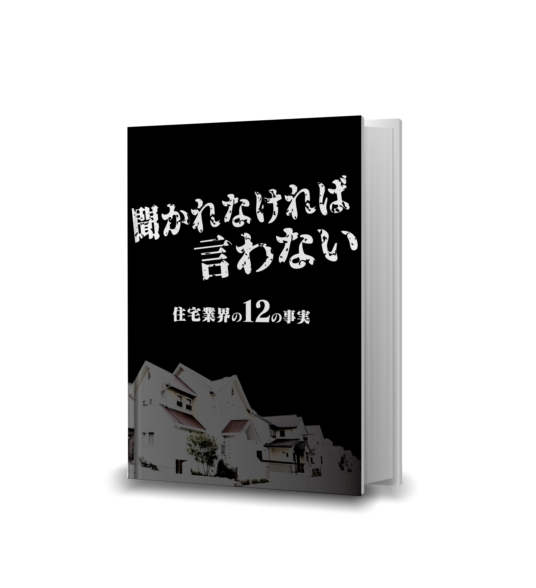

家づくりで一番難しいのは、「何を聞けばいいかわからない」ことです。
知らなければ、質問できない。質問されなければ、説明されない。
この資料は、あなたが聞けなかった質問の答えです。
感想や意見はほとんどありません。数字と出典だけです。
知らなかったとしても、あなたのせいではありません。
聞かれなければ言わない——それが、この業界の常識だからです。
この資料を読んで、信じる必要はありません。
ただ、1つだけお願いがあります。
気になった内容があったら、ご自身で調べてみてください。
全て、調べれば出てくる情報です。
日本の住宅の壁紙の90%はビニールクロスです。
ビニールクロスには「可塑剤」という薬品が練り込まれています。ビニールクロスの原料であるポリ塩化ビニル（PVC）は、本来は硬いプラスチックです。水道管や雨樋に使われているあの硬い素材です。これを壁紙のように薄く柔らかくするために、可塑剤が大量に加えられています。
代表的な可塑剤がDEHPです。正式には「フタル酸ジ(2-エチルヘキシル)」。
どんな物質か。
EUでは「生殖毒性あり」に分類されています。生殖機能や胎児の発達に悪影響を及ぼす可能性がある、という意味です。
国際がん研究機関（IARC）は「発がん性の可能性がある物質」に分類しています。
ラットを用いた動物実験では、精子の産生が19〜25%減少したという結果が報告されています（Andrade et al., Toxicology 2006年）。
日本では、油脂性食品に接触する容器や包装フィルムへのDEHP使用は2002年に原則禁止されました。
食品に触れる容器には使えない物質が、家族が毎日呼吸する部屋の壁と天井には、規制なく使われています。
壁紙の重さの約10〜40%がこの可塑剤です（製品により異なります）。
例えば含有率13%の壁紙で計算すると、6畳の部屋の壁と天井に約9kgの壁紙が貼られ、そのうち約1.2kgが可塑剤です。
この可塑剤は、塩ビと化学結合していません。
つまり、混ざっているだけです。
時間とともに抜けていきます。
どのくらいのペースで揮発するのか？
日本の国立環境研究所の研究チームが壁紙からのDEHP放散量を実測したところ、壁紙1m2あたり毎時約4〜6μgが放散されていました。
この放散は、数十年〜百年以上にわたって止まりません。
しかも、室温が10〜15度上がると放散量は約10倍に跳ね上がります。
冬の暖房時（22度）から夏の締め切った部屋（34度）になると、DEHPの室内総量は約10倍に増加します。
ここで「空気中の濃度を測れば安全基準以下だ」という反論があります。
事実です。
空気中のDEHP濃度は厚労省の指針値を大幅に下回っています。
ただし、それには理由があります。
DEHPは空気中にとどまりにくい性質を持っています。
壁紙から出たDEHPは、空気中を漂ったあと、部屋の中のホコリや物の表面にくっつきます。
米国の室内環境の研究チームが2008年に発表した論文で、DEHPのような物質は空気中に長くとどまらず、部屋の中のホコリや家具の表面にくっついていくことが明らかにされています。
空気中の濃度が低いのは「出ていない」からではなく「ホコリに移動した」からです。
ハウスダストとは、皮膚のかけら、衣類の繊維くず、ダニ、花粉、砂ぼこりなどの細かい粒子です。
どの家にも、どれだけ掃除しても存在します。
壁紙から出たDEHPは、このダストの表面にくっついて濃縮されていきます。
日本の国立環境研究所の研究チームが2024年に発表した調査で、日本の住宅100軒のハウスダストを集めて分析した結果があります。
ダスト1gあたりのDEHP濃度は、中央値で2,100μgでした。
これがどのくらい高いのか。他国と比べてみます。
（調査規模：日本100軒/カナダ726軒。採取条件は完全に同一ではありません。それでも、桁が違います。）
なぜ日本だけこれほど高いのか。
住宅に使う素材が根本的に違います。
米国とカナダの住宅では、内壁にドライウォール（石膏ボード）を張り、その上からペイント（塗装）で仕上げるのが標準工法です。ビニールクロスで壁と天井の全面を覆う日本式の施工は、米国では商業施設向けが中心であり、一般住宅ではほとんど行われていません。
米国やカナダの家には、ビニールクロスという「大面積のDEHP放散源」がそもそも存在しないのです。
そして、この壁材の違いがダスト中のDEHP濃度に影響していることは、学術的にも裏付けられています。
日本の室内環境学会で発表された研究（Bamai, Kishi et al., 2014年）では、ビニールクロスがある部屋のハウスダスト中DEHP濃度は、ない部屋より有意に高いことが実証されています。
米国の研究（Bi et al., 2018年）でも、カラーフロアがある家のダスト中DEHP濃度が有意に高い結果が出ています。
日本のビニールクロス使用率90%と、ダスト中DEHP濃度が米国の54倍であるという事実。壁材の違いがこの差の主要な要因の一つである可能性が、複数の研究から示唆されています。
ここからが問題です。
米国環境保護庁（EPA）の推定によると、乳幼児は1日に土壌とハウスダストを合わせて60〜100mg口に入れています（乳児で約60mg、1〜6歳で約100mg）。
60mgとはどのくらいか。米粒1つが約50mgなので、米粒1〜2つ分です。
1日分は少量に思えます。でもこれが365日、6年間続きます。
あなたの家のリビングを思い浮かべてください。
子どもが床の上で遊んでいます。手で床を触り、その手をそのまま口に入れます。
おもちゃを舐めます。ハイハイの赤ちゃんなら、顔が床についています。
大人はソファに座っている。でも子どもは、ホコリが最も溜まる「床の上」で暮らしています。
この子どもに、何が起きる可能性があるのか。
複数の研究が、同じ方向を指しています。
ノルウェーの研究（Jaakkola et al., American Journal of Public Health 1999年）では、PVC素材の床がある家の子どもは、気道閉塞のリスクが1.89倍であったと報告されています（調整OR=1.89, 95%CI: 1.14-3.14）。
スウェーデンの10年追跡調査（Shu et al., Indoor Air 2014年）では、PVC床材がある寝室で育った子どもの喘息発症リスクが約1.5倍であったと報告されています（調整OR=1.52, 95%CI: 0.99-2.35。統計的有意性は境界線上）。
ノルウェーの母子コホート研究（Engel et al., Environmental Health Perspectives 2018年）では、妊娠中のDEHP曝露量が最も高い群の子どもは、ADHDと診断される可能性が約3倍（オッズ比2.99）と報告されています。
（ただし、いずれの研究も「リスクの上昇」を示したものであり、必ず発症するという意味ではありません。）
日本の小児喘息の有病率は、1960年代の約1%から2000年代には約6%まで増加しました（医師診断ベース）。国際基準（ISAAC）の喘鳴有症率では10%を超えています。
原因は複合的です。室内化学物質の増加と時期が一致していることは多くの研究者が指摘していますが、因果関係は確立されていません。
さらに体が小さいので、同じ量のダストを摂取しても、体重あたりのDEHP摂取量は大人の約2倍になります。
つまり、同じ家に住んでいても、最もDEHPを体に取り込んでいるのは子どもです。
具体的に計算してみます。
日本のダスト中DEHP濃度の中央値2,100μg/gで、幼児が1日にダストを約50mg摂取したとすると、
ダスト経由だけで1日約105μgのDEHPを口にしている計算です。
体重10kgの幼児なら、10.5μg/kg/日。
さらに、子どもは食事からもDEHPを摂取しています。
産業技術総合研究所の推計では、1歳児の食事経由のDEHP摂取量は平均で約6μg/kg/日です。
合計すると、約16.5μg/kg/日。
ホコリと食事を合わせただけで、安全基準の83%に達します。
しかもこれは「中央値」——つまり100軒の真ん中の値です。
同じ研究で上位5%の住宅を計算すると、ダスト経由だけで安全基準を超えます。
食事を加えれば、基準の1.5〜2倍に達する子もいるのです。
ここで「DEHPは安全だ」という反論があります。
塩ビ工業・環境協会（VEC）は「DEHPは1940年代から研究され安全性は確認済み」と主張しています。産業技術総合研究所の2005年のリスク評価でも「大人が日常生活で体に取り込む量では追加規制不要」と結論されました。
事実です。大人が体に取り込む量では。
問題は、この評価が大人の基準であることです。子どもが体に取り込む量——ハウスダスト経由の摂取——は、評価の前提と異なります。
日本のおもちゃや育児用品にはDEHP規制があります。しかし建材にはありません。
子どもが暮らす家の壁や天井に使われるビニールクロスは、おもちゃより規制が緩いのです。
EU REACH規則（2020年7月施行）では、DEHPを含む4種のフタル酸エステルは、可塑化材料を含む成形品において0.1%以下に制限されています。
一方、日本のビニールクロスのDEHP含有率は10%以上。
EUの上限値の100倍以上です。
建築基準法で規制されている化学物質は、ホルムアルデヒドとクロルピリホスの2つだけです。
DEHPは規制の対象外です。
壁紙は10年ほどで硬くなり、パリパリ割れてきます。
それは可塑剤が抜け続けた結果です。
張り替えれば見た目はきれいになります。
でも、新しいビニールクロスから、また同じことが始まります。
「それほんと？」と思ったら、この文章をそのままAIチャット（ChatGPTやGeminiなど）に貼り付けて、「この内容は事実ですか？出典を確認してください」と聞いてみてください。AIは出典をたどって検証できます。
結論：ビニールクロスから出た可塑剤は、空気中ではなくホコリに濃縮される。そのホコリを最も多く口にするのは子どもである。同じ家に住んでいても、リスクは均等ではない。（補足：DEHPの代わりにDINP等の代替可塑剤が使われる場合もありますが、可塑剤自体がゼロのビニールクロスは存在しません。）
[注01] 日本壁装協会 統計データ（ビニールクロスシェア90%）
[注02] Shinohara N et al., PLOS ONE 2019;14(9):e0222557. DOI:10.1371/journal.pone.0222557（壁紙DEHP放散量4.5-6.1μg/m2/h。壁紙とビニール床材の両方を含む測定値）
[注03] Shinohara N et al., Environment International 2024;183. DOI:10.1016/j.envint.2023.108399. PubMed:38157606（日本100軒ダスト調査。DEHP中央値2,100μg/g）
[注04] Zhang et al., Indoor Air 2023（CHILD Cohort 726軒。カナダ中央値232μg/g）
[注05] Shin et al., Indoor Air 2020. PubMed:31883406（カリフォルニア。米国中央値39μg/g。採取条件は日本と異なる）
[注06] Weschler CJ & Nazaroff WW, Atmospheric Environment 2008;42(40):9018-9040. DOI:10.1016/j.atmosenv.2008.09.052（SVOC移行メカニズム）
[注07] Clausen PA et al., ES&T 2012;46(2):909-915. DOI:10.1021/es2035625. PubMed:22191658（23→35度Cで気相+粒子相合計約10倍。PVC床材での実験）
[注08] Bamai YA, Araki A, ... Kishi R., Sci Total Environ 2014;468-469:147-157. DOI:10.1016/j.scitotenv.2013.07.107. PubMed:24012901（PVC壁紙とダスト中DEHP濃度の関連）
[注09] Bi C et al., Environment International 2018;121:916-930. DOI:10.1016/j.envint.2018.09.013. PubMed:30347374
[注10] Jaakkola JJK et al., Am J Public Health 1999;89(2):188-192. DOI:10.2105/ajph.89.2.188. PubMed:9949747（気道閉塞OR=1.89, 95%CI:1.14-3.14。PVC床材に関するコホート研究）
[注11] Shu H et al., Indoor Air 2014;24(3):227-235. DOI:10.1111/ina.12074. PubMed:24118287（5年フォローアップのAOR=1.52, 95%CI:0.99-2.35。統計的有意性は境界線上）
[注12] Engel SM et al., Environmental Health Perspectives 2018. DOI:10.1289/EHP2358. PubMed:29790729（ノルウェー母子コホート。DEHP最高五分位のADHD OR=2.99, 95%CI:1.47-5.49。曝露源はビニールクロスに限定されず食品・化粧品等を含む複合的環境曝露）
[注13] Andrade JM et al., Toxicology 2006. DOI:10.1016/j.tox.2006.08.020. PubMed:16996189（ラット動物実験。精子産生19-25%減少。人間への直接的な適用は確立されていない）
[注14] 米国EPA IRIS RfD=0.02mg/kg/day / EPA Exposure Factors Handbook Chapter 5
[注15] EU REACH Regulation (EU) 2018/2005, Annex XVII Entry 51. EUR-Lex: https://eur-lex.europa.eu/eli/reg/2018/2005/oj/eng
[注16] IARC Monographs Vol.101（Group 2B分類。発がん性の「証拠の強さ」を示すものであり、リスクの大きさを示すものではない —農林水産省）
[注17] 食品安全委員会 季刊誌38号 TDI 30μg/kg/日. URL: https://www.fsc.go.jp/sonota/kikansi/38gou/38gou_2.pdf
[注18] 産業技術総合研究所 DEHP詳細リスク評価書 2005（1歳児食事経由DEHP摂取量 男児6.1μg/kg/日）
ここまで読んで気になるのは、「じゃあ、大手ハウスメーカーはどうなのか？」ということだと思います。
暴露01の話が本当なら、大手は別の素材を使っているはず——そう思うかもしれません。
大手ハウスメーカー9社の壁と天井の標準仕様を調べました（2025年時点の各社公式サイト標準仕様一覧を参照）。
全社ビニールクロスでした。
中堅5社も全社ビニールクロスでした。
合計14社。壁と天井の標準仕様にビニールクロスが含まれていない会社はゼロでした。
「木の家」を売りにしている住友林業も、床は無垢材を選べますが、壁と天井の主力はクロス仕様です（一部オレフィン系クロスも選べますが、大半はビニールクロスです）。
14社の訴求の重点は、断熱・デザイン・省エネ・性能に置かれており、「健康」を一番目に掲げている会社は確認できませんでした。
なぜ全社同じなのか。
理由はシンプルです。ビニールクロスは安い。
材料費と施工費を合わせて約1,000〜1,500円/m2。
施工が早く、職人の腕による差が出にくく、全国どこでも大量供給できます。
暴露01で書いた通り、ビニールクロスには可塑剤が含まれています。
それにもかかわらず、誰もが知っている大手・中堅の14社全社が標準仕様にしています。
住宅展示場に行くと、耐震性能、断熱性能、デザインの説明を受けます。
カタログにはスペックの比較表が並び、最新の設備が紹介されます。
営業マンは、あなたが質問したことには丁寧に答えてくれます。
でも「壁と天井は何でできていますか？」と聞く人はほとんどいません。
聞かれないから、説明されません。そもそも知らないで売っているのかもしれません。
結論：全社がビニールクロスを標準にしているのは、安くて施工しやすいから。壁と天井は家の内装面積の大部分を占めるが、消費者がその素材を比較しない限り、この構造は変わらない。
でも、ビニールクロスを使わなければ問題は解決するのでしょうか？
次の暴露03で、その答えを見ていきます。
出典：各社公式サイト 標準仕様一覧（2025年時点）
暴露01と02を読んで、「ビニールクロスがダメなら自然素材にすればいい」と思ったかもしれません。
漆喰、珪藻土、無垢材。
どれも「身体に良い」「調湿する」と言われています。
確かに、どれもビニールクロスのような可塑剤（DEHP）は含まれていません。
暴露01で書いた「可塑剤が空気中に出続ける」問題は、自然素材にすれば解決します。
ただし、自然素材にも落とし穴があります。
——
まず漆喰。
漆喰にDEHPのような可塑剤は入っていません。主成分は消石灰（水酸化カルシウム）——その点は安心。ただし、別の問題があります。
「漆喰は調湿する」とよく言われます。
しかし、日本建材・住宅設備産業協会の調湿建材判定基準の評価では、「調湿建材」と名乗れる最低ラインは吸放湿量70g/m2/24h以上です。
一般的な漆喰の調湿量はこの基準を下回ります（業界では約40g/m2/24h程度とされています）。
JIS規格上、漆喰は「調湿建材」ではありません。
なぜ調湿性能が低いのか。理由は厚みです。
今の住宅で漆喰を塗る場合、石膏ボード（12.5mm厚）の上に下塗り材を0.7mm、仕上げ漆喰を1.0〜1.5mm塗ります。
乾燥後の仕上がり厚は約1.2〜1.5mmです。
昔の日本家屋は厚さ10〜15cmの土壁の上に漆喰を塗っていました。調湿していたのは土壁であって、表面の漆喰ではありません。
今の漆喰は「土壁のない漆喰」。下地が全く違います。
漆喰のもう一つの売り文句は「抗菌効果」です。これにも期限があります。
塗りたての漆喰はpH12〜13の強アルカリで、カビの繁殖を抑えます。
しかし漆喰は空気中のCO2と反応して、表面から少しずつ中性化（炭酸化）していきます。
日本建築仕上学会で発表された研究があります。1.4mm厚の左官用消石灰を、室内環境に近い条件（23度C、湿度50%）で250日間測定しました。結果、炭酸化は60〜70%まで進行していました。つまり、1年足らずで抗菌効果の大部分が失われていくということです。
表面のpHが下がれば、抗菌効果も弱まります。中性化した漆喰の上にカビが生えた事例も報告されています。
そして漆喰は壁にしか塗れません。
床にも天井にも、クローゼットの中にも漆喰は使えません。
部屋の全面をカバーする素材ではないのです。
——
次に珪藻土。
珪藻土にも可塑剤は入っていません。安心です。
珪藻土は植物プランクトン（珪藻）の化石です。
顕微鏡で見ると、表面に目に見えないほど小さな穴が無数に空いています。
この穴が湿度70%を超えると水蒸気を吸い込み、70%を下回ると放出する。
高品質な珪藻土塗り壁材の調湿量は241g/m2/24hという報告があり、一般的な漆喰の約6倍です。
素材としてのポテンシャルは高い。
ただし、ここに落とし穴があります。
ホームセンター等で売られている安価な珪藻土塗り壁材は、珪藻土の含有率がわずか5〜20%しかありません。
残りの80〜95%は合成樹脂バインダー（接着剤）やフィラー（増量剤）です。
合成樹脂バインダー（アクリル樹脂・酢酸ビニル系など）は、珪藻土の直径2〜50nmの微細孔を物理的に塞ぎ、調湿性能を大幅に低下させます。
珪藻土は本来ホルムアルデヒドなどの有害物質を吸着・分解する機能を持っていますが、穴が塞がれるとこの機能も失われます。
結果として、合成樹脂入りの珪藻土は、調湿しない・有害物質の吸着もしない、という二重の問題を抱えています。
しかし、日本には珪藻土塗り壁材の含有率規制がなく、珪藻土が5%でも「珪藻土壁材」と表示できます。消費者はラベルだけでは見分けがつきません。
品質の見極めが難しいのは、含有率だけの問題ではありません。
2020年、珪藻土製品への石綿（アスベスト）混入が発覚しました。
中国の委託製造工場の管理問題で、カインズ約29万個、ニトリ約355万点がリコールされています。
消費者が成分表示だけで安全性を判断するのが極めて難しい素材です。
住宅の珪藻土塗り壁材にも同じ構図があります。業界関係者によると、市場に出回る珪藻土壁材の約90%は合成樹脂バインダーが混合された低含有率品です。「珪藻土」と名前がついていても、中身の大半は合成樹脂とフィラー（増量剤）です。
では、含有率50%以上の高品質な珪藻土なら問題ないのか。
残念ながら、高品質品にもデメリットがあります。
まずコスト。施工単価はm2あたり6,000〜8,000円。ビニールクロスの4〜6倍です。6畳の部屋の壁だけで6〜12万円、天井も塗ると更に3〜6万円かかります。
次に施工の難しさ。左官職人の手塗りが必須で、特に天井は塗料が垂れやすく高度な技術が求められます。
そしてメンテナンス。地震でひび割れが入りやすく、液体の汚れが浸透して取れません。キッチンや水回りには不向きです。
さらに、珪藻土自体がカビることがあります。珪藻土は中性なので、漆喰のようにカビを殺す力がありません。高温多湿の環境では、吸った湿気を溜め込んだまま珪藻土の表面にカビが生えます。カビが根を張ると、上から塗り直すしかありません。
そして珪藻土も、壁にしか使えません。床には強度が足りず、施工できません。
——
そして無垢材。
無垢材にも可塑剤は入っていません。天然の木そのものです。
ただし、「無垢材」と一口に言っても、条件によって性能は天と地ほど違います。
確認してほしいのは4つです。
1つ目。塗装は何か。
無垢材にウレタン塗装をすると、木の表面がプラスチックの膜で覆われます。
この膜が、木の調湿性能を大幅に低下させます。
呼吸する素材にラップを巻いたようなものです。
無塗装か、浸透性のオイル仕上げなら、木は呼吸を続けます。
2つ目。乾燥方法は何か。
木材は製品にする前に乾燥させます。方法は2つ。
自然乾燥（常温〜60度C）と、高温人工乾燥（100度C以上）。
木には「テルペン類」という成分が含まれています。
森の中で感じる清々しい香り——あれがテルペンです。
テルペンには菌の細胞膜を壊す抗菌作用、臭い分子を中和する消臭作用、自律神経をリラックス方向に導く鎮静作用があります。
高温乾燥をかけると、このテルペンが大幅に減少します。スロバキアのズヴォレン工科大学らの研究チームがモミ材を120度Cで10時間処理した実験では、テルペン含有量が186.3mg/kgから1.0mg/kgへと99%以上消失しました。
有益な成分が消えるだけではありません。140度Cを超えると、木に含まれるヘミセルロースが分解し、ホルムアルデヒドが「生成」されます。
ある研究では、パイン材を140度Cで処理した場合のホルムアルデヒド放散量が、国の安全基準（F☆☆☆☆）のほぼ上限値に達しました。
天然の木なのに、乾燥工程で有害物質が作られ、有益な成分が消されるということです。
では、内装に使われる無垢材はどうか。
床材、壁材、天井材——いずれもフローリングや羽目板として加工される場合、含水率を8〜10%まで正確に管理する必要があります。そのため、内装材では人工乾燥がほぼ100%の「標準工程」になっています。輸入材も同様です。業界全体では9割以上が人工乾燥材と推定されています。
自然乾燥の無垢フローリングを製造しているメーカーは、日本に数社しかありません。自然乾燥には半年〜1年以上かかり、大量生産ができないからです。
人工乾燥の温度帯は、低温（40〜60度）、中温（80〜90度）、高温（100〜150度）の3段階に分かれます。最も普及しているのは蒸気式の中温〜高温乾燥です。高温乾燥は最短3日〜1週間で完了するため、コスト優先の製材所で採用されています。
自然乾燥には1〜2年かかります。その分コストが高い。市場に出回る無垢フローリングのほとんどは、人工乾燥材です。
3つ目。柾目か板目か。
丸太の切り方で「柾目」と「板目」に分かれます。
柾目は年輪に直交して切り出された木材です。木目がまっすぐで、水分が木の中をスムーズに通り抜けられます。吸ったり吐いたりが得意。反りにくい。調湿に向いています。
古くから、湿気を吸ってご飯を美味しく保つ「おひつ（飯櫃）」や「寿司桶」には柾目が使われてきました。
一方、板目は年輪に沿って（接線方向に）切り出された木材です。年輪の帯——特に密度が高く細胞壁が厚い「晩材」の層——が水分の移動を阻みます。水を通しにくい。
だから板目は「酒樽」や「醤油樽」に使われてきました。中身の液体が漏れないためです。
つまり、同じ木でも、切り方で性質が正反対になります。
調湿するなら柾目一択です。
ただし、柾目を取るには樹齢100年以上の太い丸太が必要です。
しかも丸太1本から柾目として使える部分は限られています。残りは板目になります。
さらに自然乾燥には1〜2年かかります。
原料の希少性、歩留まりの悪さ、乾燥の時間。この3つが重なって、柾目フローリングを製造できる工場は極々僅かです。
市場に出回る無垢フローリングのほとんどは、板目の人工乾燥材です。
4つ目。家のどれだけの面積に使っているか。
部屋の内装を構成するのは、床、壁、天井です。
壁の面積は床の3〜4倍あります。つまり壁と天井が内装の大部分を占めています。
もし床だけ無垢材で、壁と天井がビニールクロスだったら、全内装面積の75〜80%はビニールのままです。
——
ここまで読むと、自然素材にすれば万事解決、という話ではないことがわかります。
| 素材 | 可塑剤 | 調湿量（g/m2/24h） | 使える範囲 |
|---|---|---|---|
| ビニールクロス | あり（DEHP） | 0 | 壁・天井 |
| 漆喰 | なし | 約40（基準70未満） | 壁のみ |
| 珪藻土 | なし | 241（高品質品※） | 壁のみ |
| 無垢材 | なし | 条件次第で高い | 床・壁・天井 |
※珪藻土：市場の約90%は低含有率品（業界推定値）。無垢材：塗装・乾燥・木取りで性能が激変。
漆喰は調湿基準を満たさず、壁にしか使えない。
珪藻土は品質の見極めが難しい。
無垢材は塗装・乾燥・木取り・施工範囲の4条件で性能が全く変わる。
ではどこに着目すべきか。
暴露01-02の問題（可塑剤）は、自然素材にすれば解決します。
しかし、自然素材にしても解決しない問題が1つ残ります。
湿度です。
湿度が高すぎると、カビが生え、ダニが増え、木材を腐らせる腐朽菌が繁殖し、シロアリを呼び、構造体を劣化させます。逆に湿度が低すぎると、ウイルスの生存率が上がり、肌や喉の粘膜が乾燥し、感染症にかかりやすくなります。
1985年にASHRAEの学術誌に発表された「Sterlingチャート」と呼ばれる有名な研究では、ウイルス・細菌・カビ・ダニなど9つの健康リスクを分析した結果、相対湿度40〜60%の範囲で、これらのリスクが相対的に低い値を示すと報告されています。
素材を変えても、この湿度を管理できなければ、問題の本質は解決しません。
次の第2章では、この「湿度」の問題を掘り下げます。
結論：可塑剤の問題は自然素材で解決できる。しかし、素材を変えただけでは湿度は管理できない。問われているのは「家全体で湿度を40〜60%に維持できる仕組みがあるか」です。
[注36] JIS A 1470-1:2014 調湿性能試験方法 / 日本建材・住宅設備産業協会 調湿建材判定基準70g/m2/24h以上. URL: https://www.kensankyo.org/nintei/tyousitu/kijyun.pdf
[注37] 漆喰の調湿量約40g/m2/24h: 業界資料に基づく一般的数値。特定の学術論文での実測値としてのDOI付き出典は未特定
[注38] 内村ら(2012) 日本建築仕上学会「漆喰塗料及び漆喰の各種環境条件下における中性化挙動の把握」. J-STAGE掲載（炭酸化250日で60-70%進行。1.4mm厚、23度C、湿度50%）
[注39] アトピッコハウス「はいから小町」JIS A 6909試験値241g/m2/24h（メーカー公称値）
[注40] 珪藻土含有率5-20%/市場の90%が低含有率品: 業界関係者の見解。公的統計データではない
[注41] 消費者庁リコール: カインズ約29万点 rcl=00000027353 / ニトリ約355万点 rcl=00000027370
[注42] Kacik F et al., Molecules 2012;17(8):9990-9996. DOI:10.3390/molecules17089990. PubMed:22910123（モミ材テルペン186.3→1.0mg/kg。99%消失。120度C 10時間処理）
[注43] McDonald AG et al., Holz als Roh- und Werkstoff 2002;60:181-190. DOI:10.1007/s00107-002-0293-1（Salem & Bohm, BioResources 2013レビューで引用）
[注44] 林野庁 令和5年度森林・林業白書（人工乾燥材割合58.3%、令和4年データ）. URL: https://www.rinya.maff.go.jp/j/kikaku/hakusyo/r5hakusyo_h/all/chap3_3_4.html
第1章はここまでです
第2章を読む →